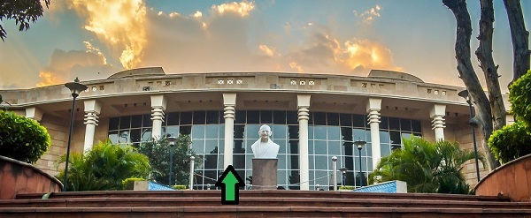

|

|
About
The Central Library of the Institute is one of the best academic libraries in the country. With its collection of more than 3,20,000 documents it provides the world class information support to its users. Besides printed books and journals, its collection contains all forms of documents such as CD-ROMs, On line databases, audio-video material, standards, specifications, theses, reports etc.
The main emphasis of the central library is on providing digital information support which is provided through its five servers and more than 70 user terminals. The library has access to more than 8000 electronic journals which is available through the campus wide fiber-optic network to all computers in the institute. The Library is currently in the process of digitizing its archival collection and theses and dissertation for which an Imaging Centre has been established with latest equipment.
|